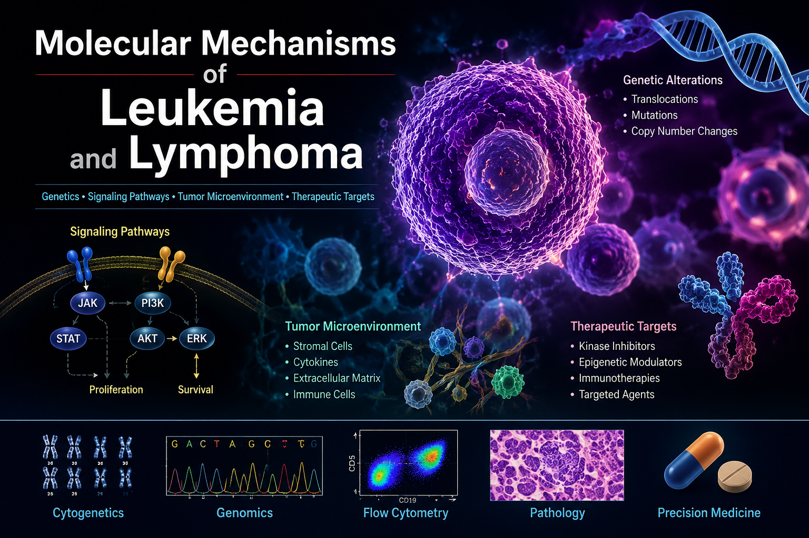
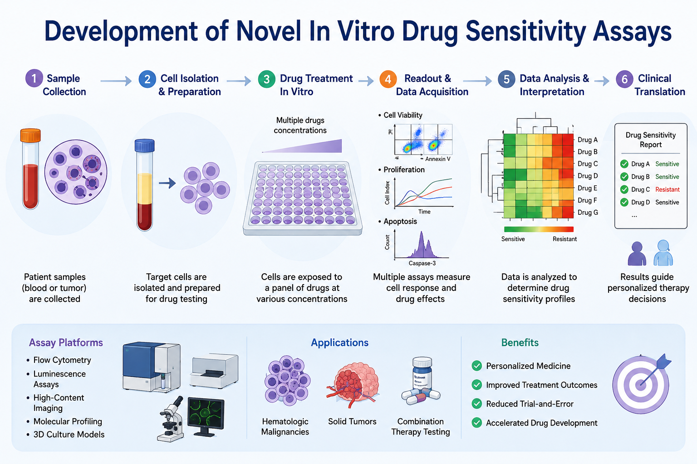
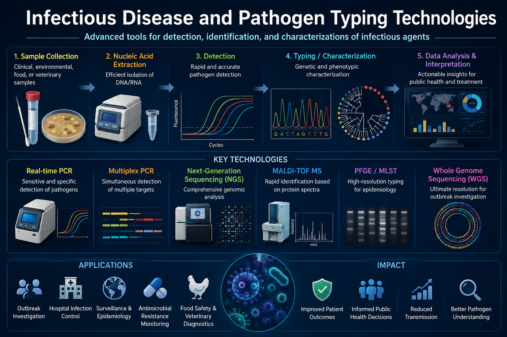

Research
Our Research
研究内容
血液悪性腫瘍の克服に向け、基礎・臨床・検査医学の融合によって新たな診断・治療法の開発に取り組んでいます。
Research Projects 研究プロジェクト
-
白血病・リンパ腫の発症メカニズム解明
Molecular Mechanisms of Leukemia and Lymphoma

血液悪性腫瘍（白血病・リンパ腫）の発症・進展に関わる分子メカニズムを解明し、新規治療標的の同定と治療法の開発を目指しています。特にNotchシグナル経路をはじめとする細胞内シグナル伝達系の異常に着目し、腫瘍細胞の増殖・生存・薬剤耐性に関わる機構を多面的に解析しています。
We aim to elucidate the molecular mechanisms underlying the onset and progression of hematological malignancies, with the goal of identifying novel therapeutic targets and developing new treatments. We focus particularly on aberrations in intracellular signaling pathways, including Notch signaling, and analyze the mechanisms governing tumor cell proliferation, survival, and drug resistance.
-
新規in vitro薬剤感受性試験の開発
Development of Novel In Vitro Drug Sensitivity Assays

患者由来の腫瘍細胞を用いた薬剤感受性評価プラットフォームを開発し、個別化医療の実現を目指しています。従来の細胞株ベースの試験では再現が難しい患者固有の腫瘍特性を捉えることで、最適な治療薬の選択と治療効果の予測精度向上に貢献します。
We are developing a drug sensitivity evaluation platform using patient-derived tumor cells to advance personalized medicine. By capturing patient-specific tumor characteristics that are difficult to reproduce in conventional cell line-based assays, we contribute to more accurate treatment selection and improved prediction of therapeutic outcomes.
-
感染症とタイピング技術
Infectious Disease and Pathogen Typing Technologies

SARS-CoV-2をはじめとする病原体の遺伝子型解析（タイピング）と迅速診断法の開発に取り組んでいます。次世代シークエンシング（NGS）や各種遺伝子解析技術を駆使し、感染症の感染動態把握・変異株の監視・新たな検査法の臨床応用を推進しています。
We are working on genotyping of pathogens including SARS-CoV-2 and the development of rapid diagnostic methods. Leveraging next-generation sequencing (NGS) and various gene analysis technologies, we advance the understanding of infectious disease dynamics, surveillance of emerging variants, and clinical application of novel diagnostic tools.
SUPPORT US
研究活動へのご支援のお願い
当分野の研究・教育活動は、皆様からのご寄付に支えられています。
血液悪性腫瘍の克服に向けた研究の発展のため、ご支援をお願いいたします。